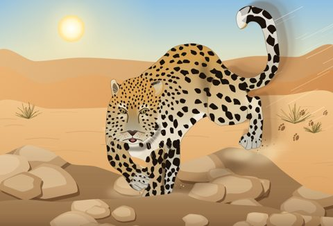
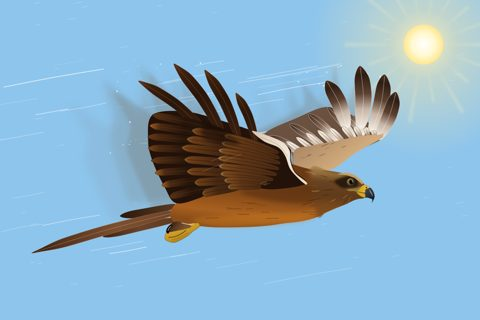
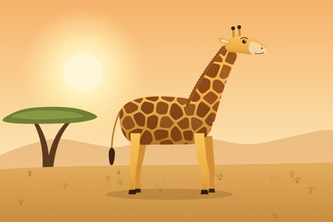
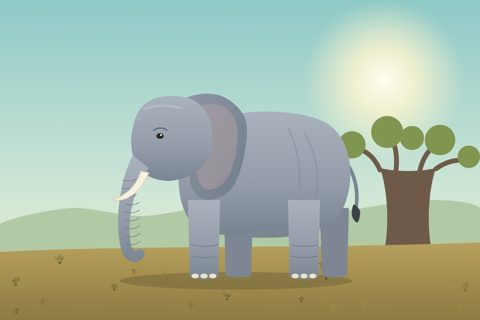
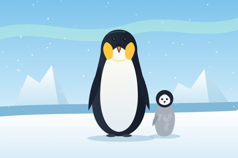
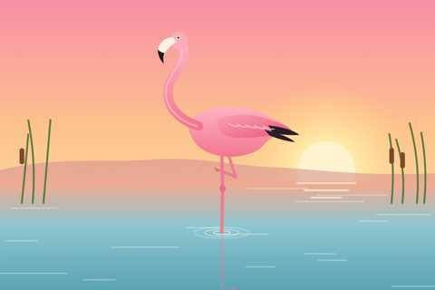

Буклет · 3D · дополненная реальность
Отсканируй QR-код в буклете, и животное появится у тебя на экране. Его можно вращать, приближать, а в режиме AR поставить прямо на пол комнаты в натуральную величину.

Лучший древолаз среди больших кошек: затаскивает добычу на ветки.
Открыть 3D →
Узнать его легко по хвосту с вырезом, как у ласточки.
Открыть 3D →
Самое высокое животное на Земле. В шее всего 7 позвонков, как у человека.
Открыть 3D →
Самое крупное животное на суше. Хобот — это нос и верхняя губа вместе.
Открыть 3D →
Самый крупный пингвин. Зимует там, где морозы ниже −50 °C.
Открыть 3D →
Розовым его делает еда: рачки и водоросли с яркими пигментами.
Открыть 3D →